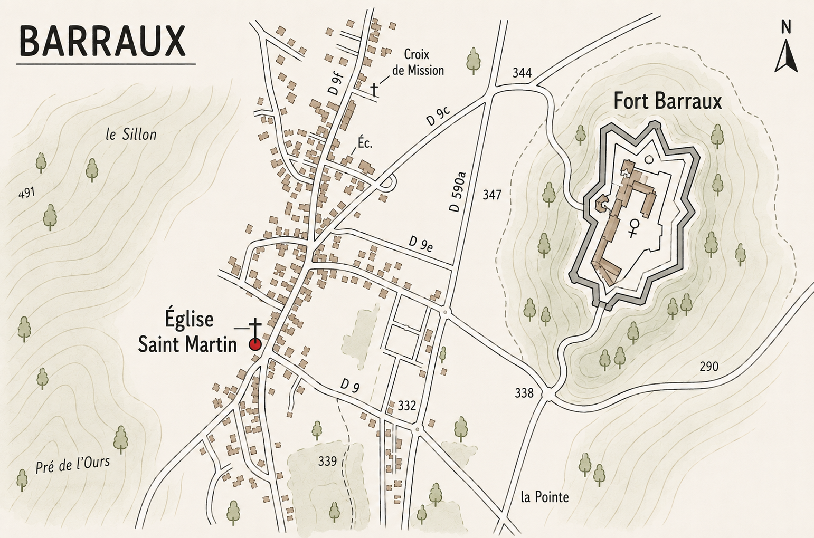

Jeudi 18 février
Mariage civil
Vendredi 19 février
Journée neige — balade & pique-nique
Départ à 10h30 depuis le domaine nordique de Féclaz — à ski ou en raquettes, au choix. Forfait achetés, ski au pied et pique-nique dans le sac !
Tenue conseillée : équipement de type jogging avec bonnet, plus quelques affaires chaudes en plus pour la pause pique-nique.
Location de skis de fond ou de raquettes : chez Féclaz Sports.
Forfait : au départ du domaine nordique.
Aide à l'installation au Fort de Barraux
Toutes les grandes et petites mains sont les bienvenues pour une ou deux heures de préparation de la salle : montage du barnum, préparation des WC, installation des tables et des chaises, mise en place des lumières, de la sono et de la déco. Idéal pour délasser les muscles !
Samedi 20 février
Où se garer
Nous vous conseillons de vous garer directement au Fort Barraux. Il est situé à 15 min à pied de l'église Saint-Martin — voir le plan ci-contre.
Célébration
À l'Église Saint-Martin de Barraux.
Migration vers le fort
Pédestre pour les mariés (15 min).
Photos & Vin d'honneur
Fort Barraux
Déjeuner placé
Après-midi festive
Animations dansantes, jeux et bonne humeur.
Soirée crêpes

Dimanche 21 février
Messe
Quelque part
Retour de noce
Fort Barraux.